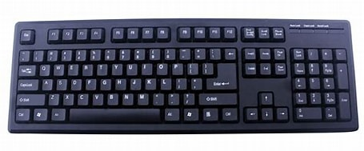

| Componente de la computadora |
|---|
Teclado El Teclado es un periférico o dispositivo de ingreso o entrada (input) de información. Consiste en un conjunto de teclas o botones dispuestos de manera horizontal sobre una lámina, donde actúan como palancas mecánicas o interruptores electrónicos, permitiendo así el ingreso de información codificada al sistema informático por parte del usuario.El teclado es probablemente el principal modo de comunicar al usuario con el sistema informático. Fue además el primero en ser ideado, al menos en lo que a computadores modernos se refiere. Hoy existen distintas configuraciones del teclado informático y distintos modelos, según su construcción ergonómica y su lógica interna. |